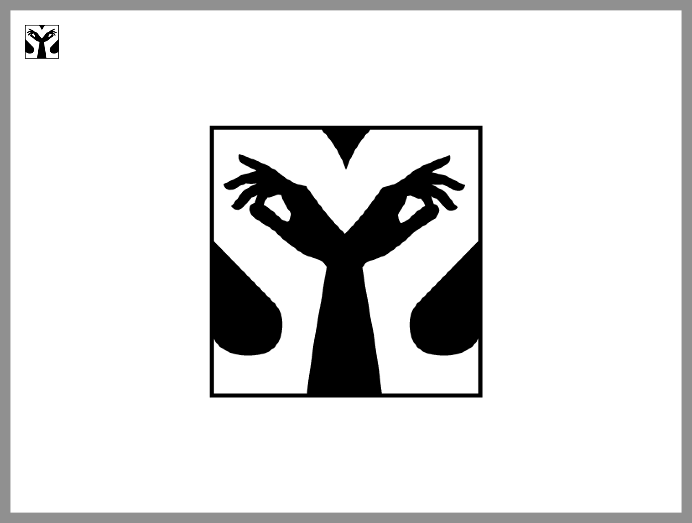
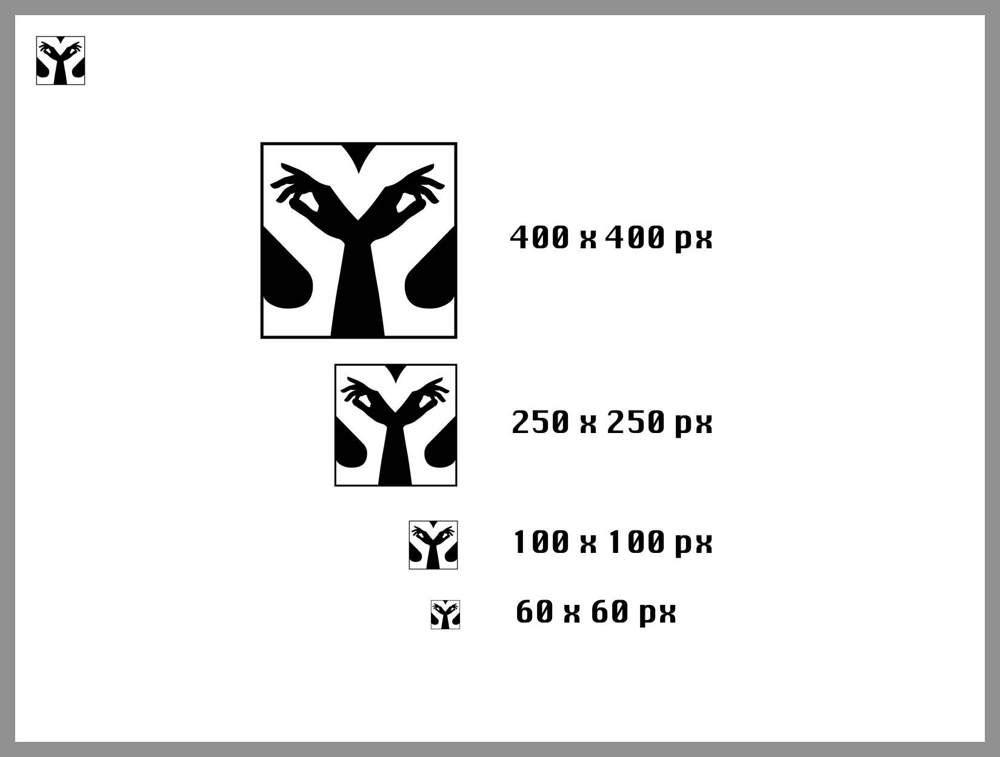
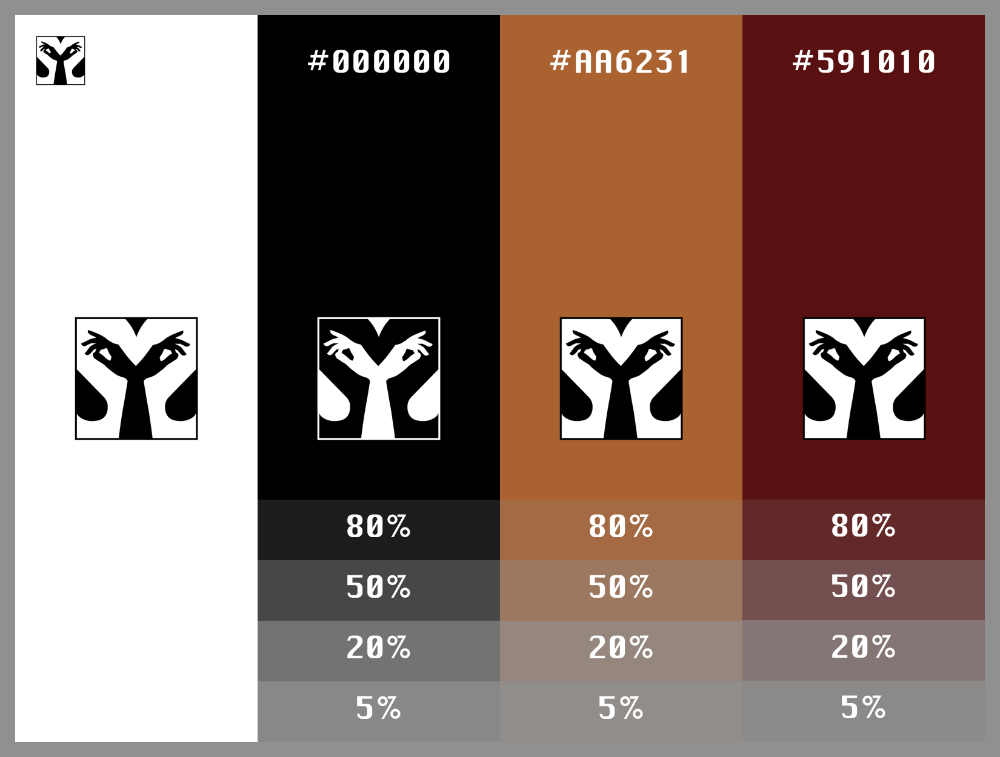
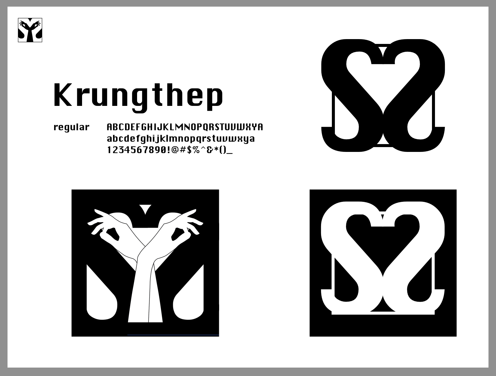

Personal Logo Style Guide
In my Design Fundamentals class, we were tasked with the design prompt of creating a logo for ourselves. I was throughly stumped because choosing one thing represnt myself is always a dauting task. But I utlimately decided to use my double initals to my advantage.
The two reflective S's are exactly that, to denote that I am not a one-sided human, and I have that quality of self-reflection. I take pride in the letter that represents me and my family.
If noticeable, two hands in a traditional indian dance pose fill the negative space to create the S shape, in an illusion. Both to represent my culture, and also be ambiguous, to let my viewer become curious and interpret the absrtact shapes in their own way.



